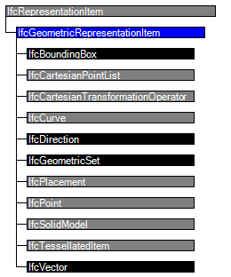

| Geometrische Repräsentation - Element |
 | Geometric Representation Item |
 | Item de représentation géométrique |
An IfcGeometricRepresentationItem is the common supertype of all geometric items used within a representation. It is positioned within a geometric coordinate system, directly or indirectly through intervening items.
NOTE Definition according to ISO/CD 10303-42:1992
An geometric representation item is a representation item that has the additional meaning of having geometric position or orientation or both. This meaning is present by virtue of:
- being a Cartesian point or a direction
- referencing directly a Cartesian point or direction
- referencing indirectly a Cartesian point or direction
An indirect reference to a Cartesian point or direction means that a given geometric item references the Cartesian point or direction through one or more intervening geometry or topology items.
EXAMPLE 1 Consider a circle. It gains its geometric position and orientation by virtue of a reference to axis2_placement (IfcAxis2Placement) that is turn references a cartesian_point (IfcCartesianPoint) and several directions (IfcDirection).EXAMPLE 2 Consider a manifold brep. A manifold_solid_brep (IfcManifoldSolidBrep) is a geometric_representation_item (IfcGeometricRepresentationItem) that through several layers of topological_representation_item's (IfcTopologicalRepresentationItem) references poly loops (IfcPolyLoop). Through additional intervening entities poly loops reference cartesian_point's (IfcCartesianPoint).
NOTE Entity adapted from geometric_representation_item defined in ISO 10303-42.
HISTORY New entity in IFC1.5

| # | Attribute | Type | Cardinality | Description | R |
|---|---|---|---|---|---|
| IfcRepresentationItem | |||||
| LayerAssignment | IfcPresentationLayerAssignment @AssignedItems | S[0:1] | Assignment of the representation item to a single or multiple layer(s). The LayerAssignments can override a LayerAssignments of the IfcRepresentation it is used within the list of Items.
IFC2x3 CHANGE The inverse attribute LayerAssignments has been added. IFC4 CHANGE The inverse attribute LayerAssignment has been restricted to max 1. Upward compatibility for file based exchange is guaranteed. | ||
| StyledByItem | IfcStyledItem @Item | S[0:1] | Reference to the IfcStyledItem that provides presentation information to the representation, e.g. a curve style, including colour and thickness to a geometric curve.
IFC2x3 CHANGE The inverse attribute StyledByItem has been added. | X | |
| IfcGeometricRepresentationItem | |||||
<xs:element name="IfcGeometricRepresentationItem" type="ifc:IfcGeometricRepresentationItem" abstract="true" substitutionGroup="ifc:IfcRepresentationItem" nillable="true"/>
<xs:complexType name="IfcGeometricRepresentationItem" abstract="true">
<xs:complexContent>
<xs:extension base="ifc:IfcRepresentationItem"/>
</xs:complexContent>
</xs:complexType>
ENTITY IfcGeometricRepresentationItem
ABSTRACT SUPERTYPE OF(ONEOF(IfcBoundingBox, IfcCartesianPointList, IfcCartesianTransformationOperator, IfcCurve, IfcDirection, IfcGeometricSet, IfcPlacement, IfcPoint, IfcSolidModel, IfcTessellatedItem, IfcVector))
SUBTYPE OF (IfcRepresentationItem);
END_ENTITY;
 EXPRESS-G diagram
EXPRESS-G diagram Link to this page
Link to this page